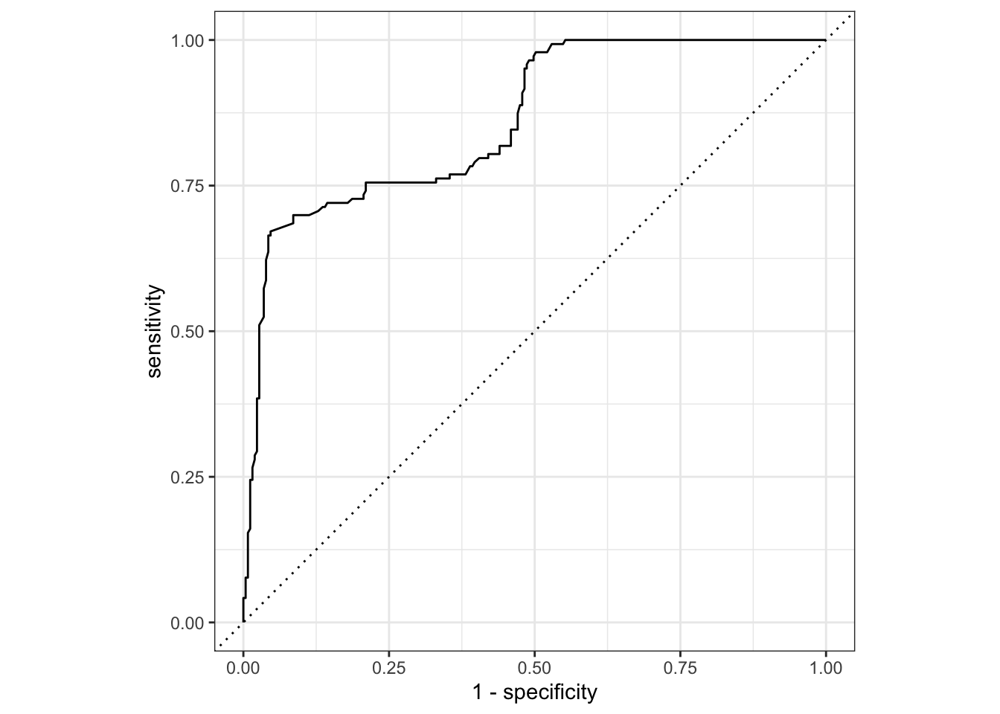

Code
library(tidyverse)
library(tidymodels)
library(knitr)
library(pROC)Go to the course GitHub organization and locate your ae-12 repo to get started
library(tidyverse)
library(tidymodels)
library(knitr)
library(pROC)insurance <- read_csv('data/insurance.csv')
# sample down 18 - 19 year olds
set.seed(210)
insurance_young <- insurance |>
filter(age == 18 | age == 19) |>
sample_n(50)
insurance <- insurance |>
filter(age > 19) |>
bind_rows(insurance_young) |>
mutate(log_charges = log(charges),
age_cent = age - mean(age),
region = case_when(region == "northeast" ~ "NorthEast",
region =="northwest" ~ "NorthWest",
region == "southeast" ~ "SouthEast",
region == "southwest" ~ "SouthWest")
)The insurance data set contains information about patient characteristics and the total charges billed by a medical insurance company. There are 1251 observations in the data set. We will use the following variables:
age_cent: Mean-centered age in years (the mean age in the data is 40.6 years old)
children: Number of children covered by the insurance policy
smoker: Indicator of whether the the patient smokes regularly (1: yes, 0: no)
region: Region where the patient lives (NorthEast, SouthEast, NorthWest, SouthWest )
charges: Total costs billed by the medical insurance company
The goal of the analysis is to use age, number of children covered by the insurance policy, smoking status, and region to predict the total costs billed by the medical insurance company. The log-transformed value of charges, log(charges), is used to fit the model.
Why do we use log(charges) instead of the original response variable in this analysis?
The output of the main effects model is below.
model1 <- lm(log_charges ~ age_cent + children + smoker + region, data = insurance)
tidy(model1) |>
kable(digits = 3)| term | estimate | std.error | statistic | p.value |
|---|---|---|---|---|
| (Intercept) | 8.819 | 0.027 | 320.905 | 0.000 |
| age_cent | 0.034 | 0.001 | 37.956 | 0.000 |
| children | 0.092 | 0.010 | 9.252 | 0.000 |
| smokeryes | 1.492 | 0.030 | 50.284 | 0.000 |
| regionNorthWest | -0.070 | 0.034 | -2.039 | 0.042 |
| regionSouthEast | -0.088 | 0.034 | -2.612 | 0.009 |
| regionSouthWest | -0.100 | 0.035 | -2.884 | 0.004 |
Interpret age_cent in the context of the data in terms of charges (not log(charges))
Interpret regionSouthEast in the context of the data in terms of charges (not log(charges)).
We want to compare the model from the previous exercise to a model that also includes the interaction between age_cent and smoker. To do so, we begin by splitting the data into training and testing sets.
The code to split the data into training and testing data is below. Explain why we may want to split the data into training and testing sets.
set.seed(210)
insurance_split <- initial_split(insurance, prop = 0.8)
insurance_train <- training(insurance_split)
insurance_test <- testing(insurance_split)We will use 5-fold cross validation to determine which model is the best fit. Explain why we want to use cross validation to compare models in this analysis.
The code for cross validation is below. Describe the process of cross validation. You can use the code as a guide.
Then, state which model you select based on the results of cross validation.
set.seed(210)
folds <- vfold_cv(insurance_train, v = 5)
# main effects model
main_effects_workflow <- workflow() |>
add_model(linear_reg()) |>
add_formula(log_charges ~ age_cent + children + smoker + region)
main_effects_cv <- main_effects_workflow |>
fit_resamples(resamples = folds)
collect_metrics(main_effects_cv, summarize = TRUE)# A tibble: 2 × 6
.metric .estimator mean n std_err .config
<chr> <chr> <dbl> <int> <dbl> <chr>
1 rmse standard 0.415 5 0.0164 pre0_mod0_post0
2 rsq standard 0.777 5 0.0129 pre0_mod0_post0# interaction effects model
interaction_effects_workflow <- workflow() |>
add_model(linear_reg()) |>
add_formula(log_charges ~ age_cent + children + smoker + region + age_cent * smoker)
interaction_effects_cv <- interaction_effects_workflow |>
fit_resamples(resamples = folds)
collect_metrics(interaction_effects_cv, summarize = TRUE)# A tibble: 2 × 6
.metric .estimator mean n std_err .config
<chr> <chr> <dbl> <int> <dbl> <chr>
1 rmse standard 0.377 5 0.0161 pre0_mod0_post0
2 rsq standard 0.815 5 0.0113 pre0_mod0_post0We begin by fitting a model using age_category to predict the odds an individual purchases a product through a social media ad. The output is below.
ad_age_fit <- glm(purchased ~ age_category, data = ads,
family = "binomial")
tidy(ad_age_fit) |>
kable(digits = 3)| term | estimate | std.error | statistic | p.value |
|---|---|---|---|---|
| (Intercept) | -2.244 | 0.281 | -7.984 | 0 |
| age_category35-49 | 1.851 | 0.316 | 5.862 | 0 |
| age_category50+ | 4.506 | 0.547 | 8.229 | 0 |
What is the odds ratio of 35-49 versus 18-34?
What are the odds an 52 year old purchases a product from a social media website? What is the probability?
Now let’s fit the model that includes both salary and age_category. The output is below.
ad_age_salary_fit <- glm(purchased ~ age_category + salary, data = ads,
family = "binomial")
tidy(ad_age_salary_fit) |>
kable(digits = 3)| term | estimate | std.error | statistic | p.value |
|---|---|---|---|---|
| (Intercept) | -4.500 | 0.500 | -8.995 | 0 |
| age_category35-49 | 1.964 | 0.342 | 5.735 | 0 |
| age_category50+ | 4.953 | 0.601 | 8.239 | 0 |
| salary | 0.029 | 0.005 | 6.410 | 0 |
What is the adjusted odds ratio of 35-49 versus 18-34?
What are the predicted odds of a 52 year old who has a salary of $60,000?
What is the predicted probability for this individual?
The ROC curve for the fitted model is below.
ad_age_salary_aug <- augment(ad_age_salary_fit, type.predict = "response")
ad_age_salary_aug |>
roc_curve(
purchased,
.fitted,
event_level = "second"
) |>
autoplot()
Explain what each point on the curve represents.
The code to compute AUC is below. Use AUC to evaluate model performance.
ad_age_salary_aug |>
roc_auc(
purchased,
.fitted,
event_level = "second"
)# A tibble: 1 × 3
.metric .estimator .estimate
<chr> <chr> <dbl>
1 roc_auc binary 0.861General question.
Suppose we are comparing models, such that different models are selected based on AIC and BIC.
When might we prefer the model selected by AIC?
When might we prefer the model selected by BIC?
To submit the AE:
Render the document to produce the PDF with all of your work from today’s class.
Push all your work to your AE repo on GitHub. You’re done! 🎉